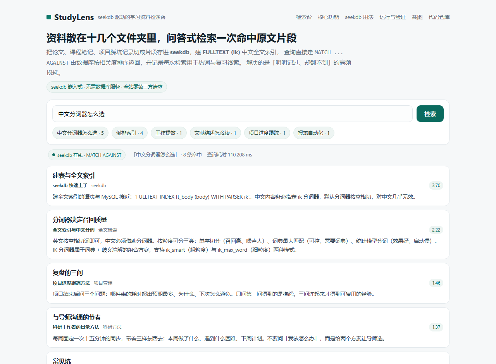
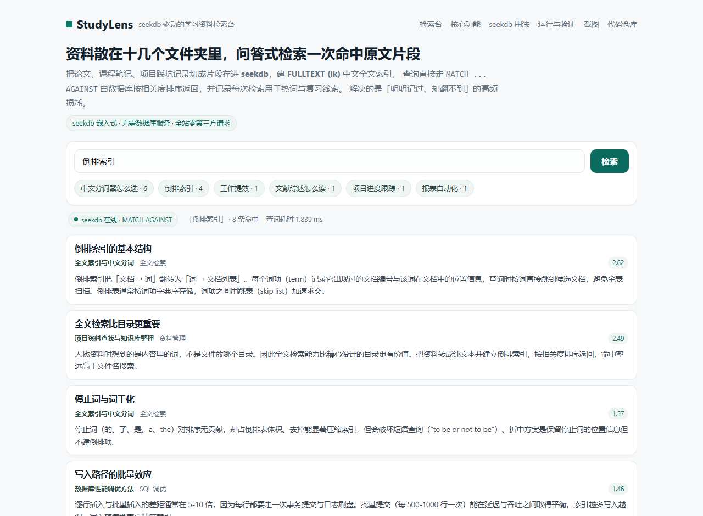
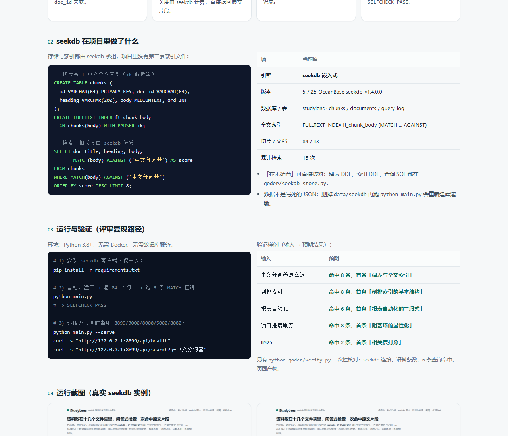

把论文、课程笔记、项目踩坑记录切成片段存进 seekdb，建 FULLTEXT (ik) 中文全文索引，
查询直接走 MATCH ... AGAINST 由数据库按相关度排序返回，并记录每次检索用于热词与复习线索。
解决的是「明明记过、却翻不到」的高频损耗。
建全文索引的语法与 MySQL 接近：`FULLTEXT INDEX ft_body (body) WITH PARSER ik`。中文内容务必指定 ik 分词器，默认分词器按空格切，对中文几乎无效。
英文按空格切词即可，中文必须借助分词器。按粒度可分三类：单字切分（召回高、噪声大）、词典最大匹配（可控、需要词典）、统计模型分词（效果好、启动慢）。IK 分词器属于词典 + 歧义消解的组合方案，支持 ik_smart（粗粒度）与 ik_max_word（细粒度）两种模式。
项目结束后问三个问题：哪件事的耗时超出预期最多、为什么、下次怎么避免。只问第一问得到的是抱怨，三问连起来才得到可复用的经验。
每周固定一次十五分钟的同步，带着三样东西去：本周做了什么、遇到什么困难、下周计划。不要问「我该怎么办」，而是给两个方案让导师选。
- 分词模式不一致：建索引用 ik_max_word、查询用 ik_smart，会出现搜不到。
消息里包含四要素：背景、诉求、选项、时限。缺背景会让对方反问，缺诉求会让对方不知道要做什么，缺选项会把决策成本转给对方，缺时限则永远悬着。
停止词（的、了、是、a、the）对排序无贡献，却占倒排表体积。去掉能显著压缩索引，但会破坏短语查询（"to be or not to be"）。折中方案是保留停止词的位置信息但不建倒排项。
人找资料时想到的是内容里的词，不是文件放哪个目录。因此全文检索能力比精心设计的目录更有价值。把资料转成纯文本并建立倒排索引，按相关度排序返回，命中率远高于文件名搜索。
seekdb13 篇 Markdown 按二级标题切成 84 个片段写入 chunks 表，
文档目录单独存 documents，通过 doc_id 关联。
FULLTEXTFULLTEXT INDEX ... WITH PARSER ik 建索引，
查询用 MATCH(body) AGAINST(...)，相关度由 seekdb 计算，直接返回原文片段。
SQL 聚合每次检索写入 query_log，
热词由 GROUP BY q 聚合得出，用来发现反复查不到的知识点。
1 条命令python main.py 真连 seekdb 建库、灌语料、
跑 6 条 MATCH 查询并断言有命中，输出 SELFCHECK PASS。
存储与索引都由 seekdb 承担，项目里没有第二套索引文件：
-- 切片表 + 中文全文索引（ik 解析器） CREATE TABLE chunks ( id VARCHAR(64) PRIMARY KEY, doc_id VARCHAR(64), heading VARCHAR(200), body MEDIUMTEXT, ord INT ); CREATE FULLTEXT INDEX ft_chunk_body ON chunks(body) WITH PARSER ik; -- 检索：相关度由 seekdb 计算 SELECT doc_title, heading, body, MATCH(body) AGAINST ('中文分词器') AS score FROM chunks WHERE MATCH(body) AGAINST ('中文分词器') ORDER BY score DESC LIMIT 8;
| 项 | 当前值 |
|---|---|
| 引擎 | seekdb 嵌入式 |
| 版本 | -- |
| 数据库 / 表 | studylens · chunks / documents / query_log |
| 全文索引 | FULLTEXT ft_chunk_body (ik) |
| 切片 / 文档 | -- |
| 累计检索 | -- |
qoder/seekdb_store.py。data/seekdb 再跑 python main.py 会重新建库灌数。环境：Python 3.8+，无需 Docker、无需数据库服务。
# 1) 安装 seekdb 客户端（仅一次） pip install -r requirements.txt # 2) 自检：建库 → 灌 84 个切片 → 跑 6 条 MATCH 查询 python main.py # => SELFCHECK PASS # 3) 起服务（同时监听 8899/3000/8000/5000/8080） python main.py --serve curl -s "http://127.0.0.1:8899/api/health" curl -s "http://127.0.0.1:8899/api/search?q=中文分词器"
验证样例（输入 → 预期结果）：
| 输入 | 预期 |
|---|---|
中文分词器怎么选 | 命中 8 条，首条「建表与全文索引」 |
倒排索引 | 命中 8 条，首条「倒排索引的基本结构」 |
报表自动化 | 命中 6 条，首条「报表自动化的三段式」 |
项目进度跟踪 | 命中 8 条，首条「阻塞项的显性化」 |
BM25 | 命中 2 条，首条「相关度打分」 |
另有 python qoder/verify.py 一次性核对：seekdb 连接、语料条数、6 条查询命中、页面产物。


?q=关键词 深链直接进结果页。
zhrzlysdlr666/powercontext · qoder/
基于官方 2026-competition-ecosystem 分支开发，资产放在 qoder/。
需求拆解、编码、调试、发布过程见仓库 qoder/DEVLOG.md；
站点通过 Qoder Sites 发布，可见范围为「任何人都可访问」。
Qoder：需求拆解、编码与站点发布；seekdb：切片存储、中文全文索引、相关度排序、检索留痕。 站点负责展示，检索能力由仓库里的 seekdb 服务提供。